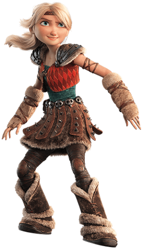
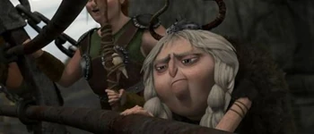
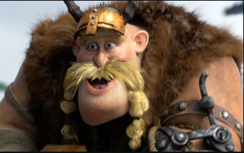

Personajes principales

Hipo Horrendo Abadejo III
Hipo Horrendo Abadejo III (Hiccup Horrendous Haddock III en inglés) es el personaje principal de la película de DreamWorks del 2010, Cómo Entrenar a tu Dragón, donde tiene la voz de Jay Baruchel en Estados Unidos y la voz de Eleazar Gómez en Latinoamérica. Es miembro de la tribu de los Gamberros Peludos. De hecho, es el hijo del jefe, Estoico el Vasto, convirtiéndose así en heredero de la tribu. Su Dragón, Chimuelo, es un Furia Nocturna, el más raro y más inteligente de las especies de Dragón en la película.

Estoico el Vasto
Estoico el Vasto (Stoick the Vast en inglés) Fue el padre de Hipo y el jefe de mal genio de la tribu de los Gamberros Peludos. Él espera que su hijo madure y sea lo suficientemente fuerte como para ser el jefe por su cuenta algún día, pero teme que no esté hecho para la vida vikinga. Estoico tiene un casco con cuernos grandes (supuestamente la mitad de la pechera de su esposa) y es el mejor amigo de Bocón el Rudo.
Astrid Hofferson
Astrid Hofferson es una joven chica vikinga de la tribu de los Gamberros Peludos que asiste al Entrenamiento con Hipo y los otros vikingos adolescentes. Astrid es el interés amoroso principal, esposa y gran amor de Hipo en la película, pero a pesar de que en un principio no le gustaba, pronto cambia su opinión al encontrarse con Hipo y Chimuelo en aquella cueva en el bosque y ver la gran amistad entre ellos dos, aparte de que entendió que los dragones no son malos
Personajes Secundarios
Gothi
Gothi es una vieja anciana de la tribu Gamberros vista por primera vez en la película Cómo entrenar a tu dragón Ella es muy pequeña y no habla con palabras como cualquiera, sino, escribiendo en el suelo con su bastón, tal vez una escritura antigua que solo unos pocos Vikingos, como Bocón, puede entender.Es la curandera y líder espiritual de Berk.
Bocón el Rudo
Bocón el Rudo (Gobber the Belch en inglés) es un guerrero veterano de la tribu de los Gamberros Peludos y un viejo amigo de Estoico el Vasto, casi un consejero de Berk y un herrero.
.png)
Dagur "el Desquiciado"
Dagur "el Desquiciado" es un personaje de la serie Dragones de Berk. Hizo su primera aparición en la primera temporada , en el capitulo Locura gemela. Es el jefe de la tribu Berserkers. También aparece repetidas ocasiones en Carrera al Borde. Es el hermano de Heather y el hijo de Oswald.